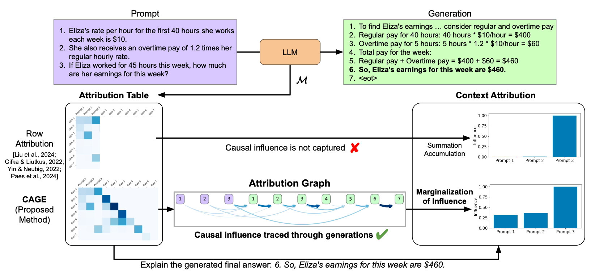

SURVEY / CONTEXT ATTRIBUTION & INTERPRETABILITY
LLM 上下文归因方法调研：从扰动法、积分梯度到 CAGE 因果归因图
当大语言模型在长上下文问答、检索增强（RAG）或多步推理中给出一个结论时，最直接的可解释性问题就是：模型的输出到底依据了上文里的哪些片段？这就是上下文归因（Context Attribution）要回答的问题。
这篇笔记把上下文归因的主流方法按技术路线串起来：先建立自回归生成的单步归因抽象，再依次拆解黑盒扰动与代理模型方法、梯度与注意力方法（含积分梯度公理推导与 Transformer 线性化近似），最后深入分析为什么单步「行归因」在长链推理（CoT）上会失效，以及 CAGE 如何通过因果归因图和闭式影响传播 $Y = A(I - A)^{-1}$ 把中间推理步骤重新接起来。
1. 问题形式化：从单步分类到消融算子
自回归语言模型每一步预测下一个 token，本质上都是在词表上做一次多分类。记提示词为 $P = \{x_1, \dots, x_P\}$，已生成的前缀为 $Y_{<t} = \{x_{P+1}, \dots, x_{t-1}\}$，完整历史前缀记为 $x_{<t} = (x_1, \dots, x_{t-1})$，目标生成 token 为 $x_t$。一个基归因算子（Base Attribution）可以统一写为映射：
$$\mathcal{M} : \bigl(f_\theta,\; x_t,\; (x_1, \dots, x_{t-1})\bigr) \;\longmapsto\; s^{x_t} = (s_1, \dots, s_{t-1})$$其中 $s_i$ 表示前文第 $i$ 个单元（token、句子或文档片段）对当前生成 $x_t$ 的直接贡献。因此，任何分类场景的归因方法都可以套用到单步生成上。
1.1 干预视角：消融向量与打分函数
记真实模型对目标输出 $y_t$ 的对数概率打分为 $f_{\text{real}}(x_{\le t}) = \log p_\theta(y_t \mid x_{\le t})$。为了衡量前文各部分的因果影响，引入一个二值消融向量（Ablation Vector） $v \in \{0, 1\}^n$，其中 $v_i = 1$ 表示保留第 $i$ 个单元，$v_i = 0$ 表示对其进行消融（如替换为 [EOS]、[PAD]、[MASK] 或直接删除）：
消融不改变模型权重 $\theta$，只干预输入。归因的核心就是估计每个单元 $i$ 的贡献 $\phi_i$：如果把 $v_i$ 从 $1$ 变成 $0$，模型生成 $y_t$ 的得分会下降多少？将单元粒度从 token 提升到句子或文档块，就得到面向长上下文的粗粒度归因。
| 技术路线 | 代表方法 | 模型访问需求 | 核心信号 | 主要优势与代价 |
|---|---|---|---|---|
| 黑盒截断 / 扰动 | CLP、ReAGent、AttriBoT、Rationales | 仅前向 logprob（黑盒） | KL 散度 / Hellinger 距离 / logp 差值 | 不依赖梯度，直观反映因果干预；但需多次前向推理，计算开销随单元数增长 |
| 线性代理模型 | ContextCite | 仅前向 logprob（黑盒） | 随机掩码 $v^{(k)}$ 拟合线性权重 $w$ | 少量采样即可全局估计各片段边际贡献；假设特征贡献近似可加 |
| 梯度与路径积分 | Vanilla Grad、Integrated Gradients (IG) | 白盒（需反向传播） | $\partial F / \partial x_i$ 沿基线路径积分 | IG 满足敏感性与完整性公理，解决饱和梯度归零；需 $m$ 次前向+反向 |
| 注意力与线性化 | Attention、Learning to Attribute、IG × Attention | 白盒（注意力权重 + 梯度） | 跨层注意力传播 $P^{(L)}$ 与梯度反馈 $F^c$ | 兼顾信息传递路径与类别区分度；需对 Transformer Block 做线性化近似 |
| 多步因果图传播 | CAGE | 任意基归因算子 $\mathcal{M}$ | 行随机邻接矩阵 $A$ 与路径边际化 $A(I-A)^{-1}$ | 显式建模生成 token 之间的多跳因果链，显著缓解长推理链归因断裂 |
2. 黑盒扰动与代理模型方法
当无法获取模型内部梯度（或只关心输入干预的因果效应）时，主流做法是修改上文并观测目标输出分布的变化。这一族方法在扰动方式、距离度量和加速策略上各有侧重：
2.1 CLP：上下文长度探针（ACL 2023）
Cífka & Liutkus (2023) 提出的 Context Length Probing (CLP) 从目标 token $n$ 往前截取长度为 $c$ 的窗口 $x_{n-c:n-1}$，计算该短窗口预测 $x_n$ 的分布与截取上限长窗口预测分布之间的 KL 散度 $D(c)$，以此衡量截断导致的信息损失。
将窗口长度 $c$ 对应的散度 $D(c)$ 与长度 $c+1$（即多包含位置 $n-c-1$ 的 token）对应的散度 $D(c+1)$ 做差，就能评价 $x_{n-c-1}$ 相对于更近上文提供了多少不可替代的新增信息。相比只看单个目标 token 的概率变化，KL 散度捕获的是整词表分布的整体偏移。
2.2 ReAGent：自然文本填充扰动（2024）
直接删除或用 [PAD] 替换上文容易产生分布外（OOD）输入，导致模型行为异常。Zhao & Shan (2024) 的 ReAGent 改为对上文做随机掩码后，使用 RoBERTa（长片段可用 Longformer）进行语义合理的填空重构，构造更贴近自然分布的扰动上文，再计算扰动前后目标 token 概率分布之间的 Hellinger 距离，据此迭代更新各位置的重要性权重。
2.3 AttriBoT：留一法的高效工程近似（2024）
最朴素的留一法（Leave-One-Out, LOO）是逐一删去上文中的某一部分，直接度量生成目标的概率降幅，但对 $n$ 个单元要跑 $n$ 次完整推理，代价极高。Liu et al. (2024) 在 AttriBoT 中整合了四项工程加速技巧：
- KV-Cache 复用：删去第 $i$ 段时，第 $i$ 段之前的前缀 KV-Cache 完全不变，直接复用，避免重复计算。
- 粗粒度归因：以句子或段落为单位，而非逐 token 消融。
- 小型代理模型：用参数量更小的同族代理模型近似计算 $\log p$ 变化。
- 分层混合策略：粗粒度 + 代理模型先筛出候选区，再做细粒度精算。
2.4 Sequential Rationales：贪心最小充分子集（EMNLP 2021）
Vafa et al. (2021) 从空集 $S = \varnothing$ 出发，每轮遍历所有尚未加入 $S$ 的上文 token，挑选加入后能最大化原目标 token 预测概率的词放入 $S$，不断重复，直到找到一个最小且充分的子集使模型 argmax 预测恢复为原本的下文 token。该方法直接刻画「最少保留哪些词就足以撑起当前预测」。
2.5 ContextCite：基于线性代理模型的全局拟合（NeurIPS 2024）
与其逐一留一测试，Cohen-Wang et al. (2024) 提出的 ContextCite 采样 $K$ 组随机掩码向量 $v^{(1)}, \dots, v^{(K)} \in \{0, 1\}^n$，对每组掩码调用真实模型记录打分 $y_k = f(v^{(k)})$，然后用带稀疏正则的线性代理模型 $\hat{f}_\phi(v) = w^\top v + b$ 拟合 $v \mapsto y$ 的映射：
$$\min_{w,\, b}\; \frac{1}{K}\sum_{k=1}^{K}\bigl(w^\top v^{(k)} + b - y_k\bigr)^2 + \lambda \|w\|_1$$拟合得到的权重分量 $w_i$ 即作为第 $i$ 个上下文片段的重要性分数。即便上文有上百个句子，往往只需 $K \approx 32 \sim 64$ 次随机掩码推理，就能远低于 LOO 的成本近似出全局归因。
3. 梯度法、积分梯度与线性化 Transformer 归因
如果可以访问模型权重和反向传播，梯度和注意力是最常用的白盒归因工具。但直接拿普通梯度或原始注意力分数当归因，存在根本性的理论缺陷。
3.1 普通梯度的核心缺陷：饱和与敏感性违背
普通梯度法直接用输入嵌入相对于目标 loss（或 $\log p$）的梯度幅度衡量重要性。Sundararajan et al. (2017) 指出，它违背了归因应满足的基本敏感性公理（Sensitivity Axiom）：若输入和基线仅在一个特征上不同且导致输出改变，该特征必须获得非零归因。
在带 ReLU 或 Sigmoid 等激活的深度网络中，函数存在大片平坦饱和区。考虑一个极简反例：
$$f(x) = 1 - \text{ReLU}(1 - x)$$当输入从基线 $x' = 0$ 变到 $x = 2$ 时，输出从 $f(0) = 0$ 变为 $f(2) = 1$，完全由 $x$ 的变化引起；但恰巧在 $x = 2$ 处函数已进入平坦区，局部梯度 $f'(2) = 0$。普通梯度只看终点的「瞬时变化率」，因此会错误地判定特征 $x$ 贡献为 $0$。
3.2 积分梯度（Integrated Gradients, ICML 2017）完整推导
积分梯度（IG）通过沿基线到当前输入的直线路径对梯度求平均，把局部瞬时斜率转化为全局累积贡献。设网络函数为 $F: \mathbb{R}^n \to \mathbb{R}$，当前输入为 $x \in \mathbb{R}^n$：
-
选择基线 $x'$：代表「信号缺失」的参考态（通常满足 $F(x') \approx 0$）。图像任务常用全黑图，文本任务常用全零嵌入向量或
[EOS]/[PAD]token 的嵌入。 - 构造插值路径：定义参数 $\alpha \in [0, 1]$ 下的直线路径 $\gamma(\alpha) = x' + \alpha (x - x')$。
- 路径积分定义：第 $i$ 维特征的归因值定义为沿路径的梯度积分乘以输入差量： $$\text{IG}_i(x) ::= (x_i - x'_i) \times \int_{\alpha=0}^{1} \frac{\partial F\bigl(x' + \alpha (x - x')\bigr)}{\partial x_i}\, d\alpha$$
- 黎曼和数值近似：实际计算时取步数 $m$（常用 $m \in [20, 300]$），将 $[0, 1]$ 等分为 $\alpha_k = k/m$： $$\text{IG}_i^{\text{approx}}(x) = (x_i - x'_i) \times \frac{1}{m}\sum_{k=1}^{m} \frac{\partial F\!\left(x' + \frac{k}{m}(x - x')\right)}{\partial x_i}$$
- 完整性公理校验（Completeness Sanity Check）：由微积分基本定理，精确积分梯度必然满足： $$\sum_{i=1}^{n} \text{IG}_i(x) = F(x) - F(x')$$ 工程上可以直接核对近似和与 $F(x) - F(x')$ 的误差；若相对偏差超过 5%，说明黎曼和太粗，需要调大步数 $m$。
3.3 注意力方法与 IG × Attention（TMLR 2022）
另一类常见做法是直接提取 Transformer 内部注意力权重 $A = \text{Softmax}\!\left(\frac{QK^\top}{\sqrt{d_k}}\right)$ 作为重要性指标。但原始注意力既混杂了大量与决策无关的语法/位置偏置，也忽略了 Value 投影、残差连接和 MLP 变换。近年也有工作如 Learning to Attribute with Attention（Cohen-Wang et al., 2025）用扰动法构造监督数据，训练轻量级网络学习各注意力头对真实归因的加权系数。
从白盒机制出发，Chen et al. (2022, TMLR) 在 Beyond Intuition: Rethinking Token Attributions inside Transformers 中提出了更严谨的 IG × Attention 框架，核心是先对单层 Transformer Block 做线性化近似：
$$Z^{(l)} \approx \bigl(A^{(l)} Z^{(l-1)} W^{(l)} + Z^{(l-1)}\bigr)\, W_{\text{MLP}}^{(l)}$$公式中每一项与标准 Transformer 组件的精确对应关系如下：
| 公式符号 | 对应组件 | 数学展开与物理意义 |
|---|---|---|
| $Z^{(l-1)}$ | 输入隐状态 | 形状 $[N, D]$，包含上一层输出的全部 $N$ 个 token 表示。 |
| $A^{(l)}$ | 注意力分数矩阵 | $A^{(l)} = \text{Softmax}\!\left(\frac{(Z^{(l-1)}W_Q)(Z^{(l-1)}W_K)^\top}{\sqrt{d_h}}\right)$，封装了 $W_Q$ 与 $W_K$ 的交互结果。 |
| $W^{(l)}$ | Value + 输出投影 | 并非单个 $W_V$，而是值投影与多头输出融合投影的等效复合：$W^{(l)} \approx W_V^{(l)} W_{\text{proj}}^{(l)}$。 |
| $+ Z^{(l-1)}$ | Attention 残差连接 | 对应 $\text{LayerNorm}(x + \text{MSA}(x))$ 中的恒等支路，保证梯度无损回传。 |
| $W_{\text{MLP}}^{(l)}$ | FFN + 残差聚合 | 忽略激活函数 $\sigma$ 后，将两层线性层与外部残差合并为 $W_{\text{MLP}}^{(l)} = W_{\text{MLP},1}^{(l)} W_{\text{MLP},2}^{(l)} + I$。 |
在线性化展开的基础上，该框架把归因拆成「前向能不能传上来」和「传上来能不能支撑目标类别」两部分的乘积。其中类别反馈项 $F^c$ 对最后一层注意力图 $A^{(L)}$（而非直接对噪声更大的原始输入 $X$）做 $K$ 步积分梯度并经过 $\text{ReLU}$ 过滤负贡献：
$$F^c = \text{ReLU}\!\left(\frac{1}{K}\sum_{k=1}^{K} \frac{\partial \mathcal{L}^c\!\left(\frac{k}{K} X\right)}{\partial A^{(L)}}\right), \qquad \text{Attribution} = P^{(L)} \odot F^c$$这里 $\frac{k}{K}X$ 相当于把输入强度从暗到亮分 $K$ 步线性插值回放，$\frac{1}{K}\sum$ 通过路径平均消除单点梯度抖动，而 $\text{ReLU}$ 只保留对目标类别 $c$ 有正向支撑的通路。
4. 从单步「行归因」到多步因果图：CAGE 精读
把上述任意基归因算子 $\mathcal{M}$ 直接套到多步自回归生成（特别是 Chain-of-Thought 推理）上，会暴露一个根本缺陷。传统方法把每一步生成 $x_t$ 对 prompt 的直接归因按行堆叠（统称为行归因 / Row Attribution），然后直接看最终答案那一行，或者对所有行简单求和——但这完全丢掉了「生成 token 之间」的因果传递。
例如在一道多步算术题里，第 2 句中间推理用到了 prompt 第 1 句（时薪 10 美元），第 3 句用到了 prompt 第 2 句（加班倍率 1.2），第 6 句最终答案「总收入 460 美元」表面上只是把第 5 句的「400 + 60」加起来。如果只看第 6 句对 prompt 的直接归因，prompt 第 1、2 句的贡献几乎归零——因为它们的影响是通过中间推理步骤间接传过来的。

4.1 CAGE 三步数学构造
CAGE（Context Attribution via Graph Explanations）将任意基归因算子 $\mathcal{M}$（Perturbation、CLP、ReAGent、IG、Attn×IG 等）统一升级为多步因果图归因，流程只有三步，数学上非常干净：
- 构建归因表 $T \in \mathbb{R}^{Y \times T_{\text{all}}}$：记 prompt 长度为 $P$，生成长度为 $Y$，总长度 $T_{\text{all}} = P + Y$。对每个生成步 $x_t$（$t > P$），调用基归因算子 $\mathcal{M}$ 计算它对所有前文（包括 prompt 和之前已生成的 token）的直接归因向量 $s^{x_t} = (s_1, \dots, s_{t-1})$，按行堆叠成表 $T$。表 $T$ 天然分成两块：前 $P$ 列是 prompt 对生成的直接影响，后 $Y$ 列构成一个严格下三角块，记录生成步骤之间的内部影响。
- 行随机归一化得到邻接矩阵 $A$：把每个节点看作图的顶点，用 $\Phi(x) = \max(x, 0)$ 截断负值并按行归一化，构造满足因果性（Causality，仅过去指向未来，矩阵严格下三角）与行随机性（Row Stochasticity，每个生成节点所有入边权重和为 1）的邻接矩阵： $$A_{i, j} = \frac{\Phi(T_{i, j})}{\sum_{k} \Phi(T_{i, k})}, \qquad \Phi(x) = \max(x, 0)$$ 将前 $P$ 行补零扩充为方阵 $A \in \mathbb{R}^{T_{\text{all}} \times T_{\text{all}}}$ 后，$A_{i,j}$ 即代表有向边 $v_j \to v_i$ 的权重。
- 沿所有因果路径边际化，闭式求解总影响矩阵 $Y$：对目标生成节点 $\tau$，把前一步 $\tau - 1$ 所承载的影响传递过来，单步递推为 $A'_{\tau,:} = A_{\tau,:} + A_{\tau, \tau-1} \cdot A_{\tau-1,:}$。将这一递推沿所有长度的路径（1 跳、2 跳、……）展开求和，即 $A + A^2 + A^3 + \dots$。因为 $A$ 严格下三角（幂零矩阵，谱半径为 0），Neumann 级数精确收敛到闭式解： $$Y = A(I - A)^{-1}$$ 其中 $Y_{i, j}$ 表示节点 $j$ 通过所有可能因果路径对节点 $i$ 产生的累积影响。最终要解释任意输出子集 $\mathcal{O} \subseteq \{P+1, \dots, T_{\text{all}}\}$ 对 prompt 的归因时，只需对对应行求和并截取前 $P$ 列： $$a^{\mathcal{O}} = \sum_{\tau \in \mathcal{I}(\mathcal{O})} Y_{\tau, 1:P}$$
4.2 CAGE 定量实验结果
原论文在 Math、Facts（基于 FEVEROUS 的多事实抽取）和 MorehopQA 三个基准上，跨 Llama 3（3B / 8B）与 Qwen 3（4B / 8B）共 4 个模型，把 5 种基归因算子分别接入 Row Attribution 与 CAGE 进行对照测试：
| 基归因方法 | 框架 | Llama 3B (AC↑) | Llama 8B (AC↑) | Qwen 4B (AC↑) | Qwen 8B (AC↑) |
|---|---|---|---|---|---|
| IG | Row | 0.551 ± 0.28 | 0.160 ± 0.23 | 0.382 ± 0.29 | 0.582 ± 0.27 |
| CAGE | 0.635 ± 0.28 | 0.151 ± 0.24 | 0.414 ± 0.29 | 0.580 ± 0.27 | |
| Attn × IG | Row | 0.518 ± 0.27 | 0.148 ± 0.22 | 0.353 ± 0.30 | 0.406 ± 0.26 |
| CAGE | 0.621 ± 0.27 | 0.153 ± 0.24 | 0.378 ± 0.29 | 0.399 ± 0.24 | |
| CLP | Row | 0.411 ± 0.27 | 0.441 ± 0.29 | 0.368 ± 0.25 | 0.423 ± 0.28 |
| CAGE | 0.483 ± 0.28 | 0.502 ± 0.30 | 0.456 ± 0.28 | 0.446 ± 0.28 | |
| ReAGent | Row | 0.252 ± 0.28 | 0.309 ± 0.31 | 0.196 ± 0.24 | 0.250 ± 0.25 |
| CAGE | 0.437 ± 0.28 | 0.472 ± 0.28 | 0.458 ± 0.28 | 0.436 ± 0.29 | |
| Perturbation | Row | 0.237 ± 0.24 | 0.262 ± 0.26 | 0.191 ± 0.23 | 0.230 ± 0.24 |
| CAGE | 0.420 ± 0.26 | 0.437 ± 0.28 | 0.442 ± 0.28 | 0.425 ± 0.28 |
数据呈现出两条清晰的规律：
- 归因覆盖率（Attribution Coverage, AC）大幅提升：在 Math 数据集全部 20 组（4 模型 × 5 基方法）对比中，CAGE 赢下 17/20（85%），最高相对增益达 +134%（ReAGent on Qwen 4B：0.196 → 0.458），平均提升 +40%。尤其是 Perturbation 和 ReAGent 两类扰动法，接入 CAGE 后从垫底直接追平甚至反超部分梯度法——说明它们原本吃亏不是基打分不准，而是缺少跨生成步的因果汇聚。
- 忠实度（Faithfulness）全面占优：在 MorehopQA 与 Facts 上采用 RISE / MAS 句子级递增删除测试（Llama 3 8B 与 Qwen 3 8B × 5 种基方法），CAGE 在全部 40/40 项测试中无一败绩，最高提升 30%，平均提升 11%。在 Facts 定性案例中，CAGE 甚至能捕捉到模型「为了避免重复输出已列举事实」而回头参考前一句生成所对应的 prompt 句子。
5. 归因忠实度怎么评测：反事实编辑范式
传统忠实度评测（如 RISE / MAS）按归因排序把重要句子替换成 [EOS]，看原输出概率下降得多快。但硬替换同样存在 OOD 隐患——输出概率骤降可能只是因为句子语法坏掉了，而非真的移除了关键语义证据。
另一条更有意思的评测思路来自 Counterfactuals As a Means for Evaluating Faithfulness of Attribution Methods in Autoregressive Language Models，核心是用分布内反事实编辑（In-distribution Counterfactual）替代硬删除：
- 双模型架构：Predictor 是待解释的目标模型（如 Gemma-2B）；Editor 是专门负责改写文本的辅助模型（如微调后的 Pythia 或 GPT-J）。
- 评测流程：（1）用待测归因方法挑出输入中排名前 Top-$N\%$ 的关键 token；（2）将这些 token 替换为
<mask>；（3）让 Editor 填补掩码生成语法通顺的新句子（反事实样本），目标是迫使 Predictor 的预测从原标签翻转到指定的对照标签（Foil Label）。 - 判定准则：如果某归因方法只需改写更少比例的 token 就能让 Predictor 稳定翻转预测，说明它定位到的确实是驱动模型决策的真实因果依据，忠实度更高。
6. 总结与工程选型
三条核心结论
- 单步方法决定「局部准不准」，图传播决定「长链断不断」：对于单轮短答，ContextCite（黑盒高效）或 IG × Attention（白盒精细）已足够；一旦涉及多步 CoT 或多轮 Agent 轨迹，必须把生成步之间的依赖建图传播（如 CAGE 的 $Y = A(I-A)^{-1}$），否则前文关键前提会被中间步骤遮蔽。
- 扰动法的核心瓶颈不是理论，而是 OOD 与算力：用
[PAD]/[EOS]硬抹除会引入分布外噪声，ReAGent 和反事实 Editor 的价值就在于把干预拉回自然分布内；而 AttriBoT 的 KV-Cache 复用 + 粗粒度分块 + 代理模型则是线上可落地的关键工程组合。 - 长上下文与 Agent 场景的延伸价值：上下文归因不仅服务于可解释性可视化，更能直接反哺长上下文压缩、RAG 证据溯源、以及多轮 Agent 轨迹中「哪条工具观察真正决定了最终结论」的信用分配（Credit Assignment）。
参考文献
- Sundararajan, M., Taly, A., & Yan, Q. (2017). Axiomatic Attribution for Deep Networks. ICML 2017.
- Vafa, K., Deng, Y., Blei, D., & Rush, A. M. (2021). Rationales for Sequential Predictions. EMNLP 2021.
- Chen, J., Li, X., Yu, L., et al. (2022). Beyond Intuition: Rethinking Token Attributions inside Transformers. TMLR 2022.
- Cífka, O., & Liutkus, A. (2023). Black-box Language Model Explanation by Context Length Probing. ACL 2023.
- Zhao, Z., & Shan, B. (2024). ReAGent: A Model-Agnostic Feature Attribution Method for Generative Language Models. arXiv:2402.00794.
- Cohen-Wang, B., Shah, H., Georgiev, K., & Madry, A. (2024). ContextCite: Attributing Model Generation to Context. NeurIPS 2024.
- Liu, F., Kandpal, N., & Raffel, C. (2024). AttriBoT: A Bag of Tricks for Efficiently Approximating Leave-One-Out Context Attribution. arXiv:2411.15102.
- Cohen-Wang, B., Chuang, Y. S., & Madry, A. (2025). Learning to Attribute with Attention. arXiv:2504.13752.
- Explaining the Reasoning of Large Language Models Using Attribution Graphs (CAGE). ICLR 2026 submission.